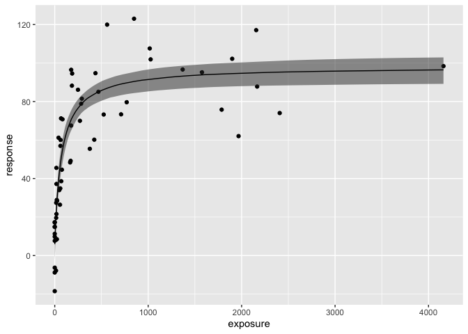

This small package performs simple sigmoidal Emax model fit using Stan, without the need of (1) writing Stan model code and (2) setting up an environment to compile Stan model, inspired by rstanarm package.
rstanarm package (link) is a very flexible, general purpose tool to perform various Bayesian modeling with formula notations, such as generalized mixed effect models or joint models. One small gap it has is in nonlinear model fitting, where it only accepts nonlinear functions defined in stats package with SS prefixes (link). Unfortunately the (sigmoidal) Emax model, one of the most commonly used nonlinear functions in the field of pharmacometrics, is not among the available functions. The rstanarm package also seems to be assuming that we fit nonlinear mixed effect models, but not simple nonlinear models without mixed effects. brms is another great general purpose package that allows formula notation, but it requires users to compile generated Stan models. The need for setting up an environment for compiling Stan code can be daunting for beginners, especially with Windows.
I hope this rstanemax package will fill the niche gap, allow for easier implementation of Emax model in Bayesian framework, and enable routine uses in the pharmacokinetic/pharmacodynamic field.
This package was build using rstantools (link) following a very helpful step-by-step guide (link) on creating a package that depends on RStan.
Installation
From CRAN
You can install the released version of rstanemax from CRAN with:
install.packages("rstanemax")From source
You can alternatively install the package from source.
Before doing so, you first have to install RStan and C++ Toolchain.
RStan Getting Started
Also, you have to follow the instruction below if you are using Windows PC.
Installing RStan from source on Windows
After this step you should be able to install the package from GitHub using devtools.
install.packages("devtools")
library(devtools)
devtools::install_github("yoshidk6/rstanemax")Example
This GitHub pages contains function references and vignette.
# Load rstanemax
library(rstanemax)
#> Loading required package: Rcpp
# Run model with a sample dataset
set.seed(12345)
data(exposure.response.sample)
fit.emax <- stan_emax(response ~ exposure, data = exposure.response.sample,
# the next line is only to make the output short
chains = 1, iter = 500, seed = 12345)
#>
#> SAMPLING FOR MODEL 'emax' NOW (CHAIN 1).
#> Chain 1:
#> Chain 1: Gradient evaluation took 8.1e-05 seconds
#> Chain 1: 1000 transitions using 10 leapfrog steps per transition would take 0.81 seconds.
#> Chain 1: Adjust your expectations accordingly!
#> Chain 1:
#> Chain 1:
#> Chain 1: Iteration: 1 / 500 [ 0%] (Warmup)
#> Chain 1: Iteration: 50 / 500 [ 10%] (Warmup)
#> Chain 1: Iteration: 100 / 500 [ 20%] (Warmup)
#> Chain 1: Iteration: 150 / 500 [ 30%] (Warmup)
#> Chain 1: Iteration: 200 / 500 [ 40%] (Warmup)
#> Chain 1: Iteration: 250 / 500 [ 50%] (Warmup)
#> Chain 1: Iteration: 251 / 500 [ 50%] (Sampling)
#> Chain 1: Iteration: 300 / 500 [ 60%] (Sampling)
#> Chain 1: Iteration: 350 / 500 [ 70%] (Sampling)
#> Chain 1: Iteration: 400 / 500 [ 80%] (Sampling)
#> Chain 1: Iteration: 450 / 500 [ 90%] (Sampling)
#> Chain 1: Iteration: 500 / 500 [100%] (Sampling)
#> Chain 1:
#> Chain 1: Elapsed Time: 0.158951 seconds (Warm-up)
#> Chain 1: 0.065293 seconds (Sampling)
#> Chain 1: 0.224244 seconds (Total)
#> Chain 1:
#> Warning: Tail Effective Samples Size (ESS) is too low, indicating posterior variances and tail quantiles may be unreliable.
#> Running the chains for more iterations may help. See
#> http://mc-stan.org/misc/warnings.html#tail-ess
fit.emax
#> ---- Emax model fit with rstanemax ----
#>
#> mean se_mean sd 2.5% 25% 50% 75% 97.5% n_eff Rhat
#> emax 92.01 0.47 6.49 79.08 87.94 92.11 96.35 103.43 188.95 1
#> e0 5.69 0.35 4.92 -2.87 2.13 5.90 9.07 15.00 192.44 1
#> ec50 75.78 1.23 19.37 44.51 62.88 72.26 85.34 124.31 246.47 1
#> gamma 1.00 NaN 0.00 1.00 1.00 1.00 1.00 1.00 NaN NaN
#> sigma 16.65 0.13 1.66 13.77 15.47 16.55 17.55 20.20 157.45 1
#>
#> * Use `extract_stanfit()` function to extract raw stanfit object
#> * Use `extract_param()` function to extract posterior draws of key parameters
#> * Use `plot()` function to visualize model fit
#> * Use `posterior_predict()` or `posterior_predict_quantile()` function to get
#> raw predictions or make predictions on new data
#> * Use `extract_obs_mod_frame()` function to extract raw data
#> in a processed format (useful for plotting)
plot(fit.emax)
References
Fitting the Emax Model in R has nice intro on Emax (with kindly introducing this package). brms implementation of the same model can be found here.